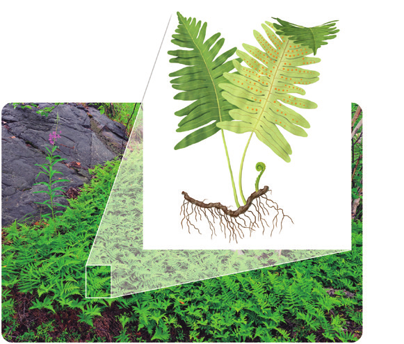
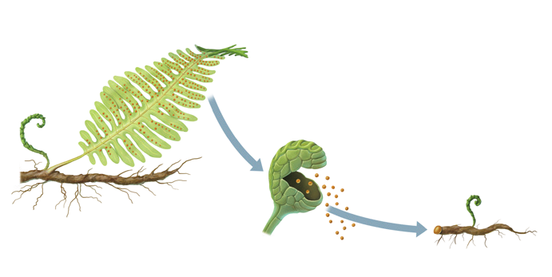
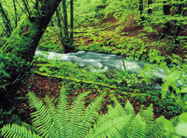

Los helechos son los representantes más conocidos de este grupo. Son plantas de mayor tamaño que los musgos y, como ellos, necesitan vivir en ambientes húmedos. Prefieren los bosques sombríos o las orillas de ríos y lagos. Los rasgos comunes a este grupo de plantas son los siguientes:
Tienen vasos conductores que transportan el agua, las sales minerales y los productos de la fotosíntesis por toda la planta.
El cuerpo presenta tallo, hojas y raíz.
Los helechos como bioindicadores
Los helechos detectan las perturbaciones medioambientales, en especial las relacionadas con la presencia de agua.

Ilustración de helechos
La reproducción de los helechos
Durante la época reproductora, se desarrollan en el envés de los frondes unos soros, que están formados por esporangios.
En el interior de los esporangios se originan las esporas.
Cuando las esporas maduran, son liberadas y transportadas por el viento. Si hay suficiente humedad, germinan y dan lugar a nuevos helechos.

Ciclo de vida de un helechoCrecimiento de una planta

Río en el bosqueDibujo lineal geométricoArte lineal geométricoRepresentación gráfica